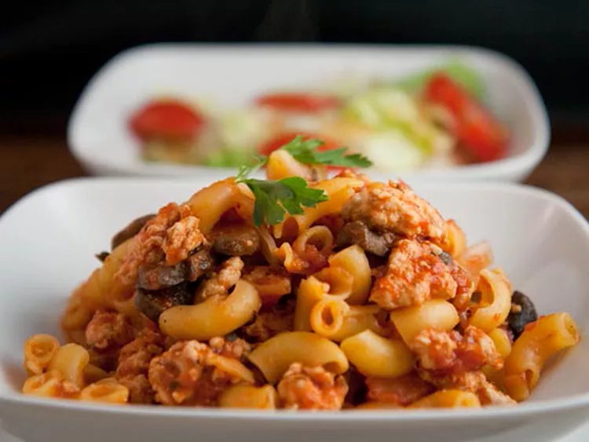

Lasanga Recipe

Description
This is a sick very cool, very yummy lasanga. I promise it is not actually goulash.
Ingredients
- 1 pound lean groudn turkey
- 1(14 ounce) can stewed, diced tomatos
- 3 cloves garlic, minced
- 1 cup tomato sauce
- 2 teaspoons white sugar
- 1/2 teaspoon dried basil
- 1 (16 ounce) package bow tie pasta
Steps
- In a large skillet over medium hear, cook the turkey until browned
- Stir in the stewed tomatoes, garlic, tomato sauce, sugar and basil, and then simmer for about 20 minutes./li>
- Bring a large pot of lightly salted water to a boil. Add pasta and cook for 8 to 10 minutes or until al dente, and then drain. Combine the pasta and turkey mixture; toss and serve.